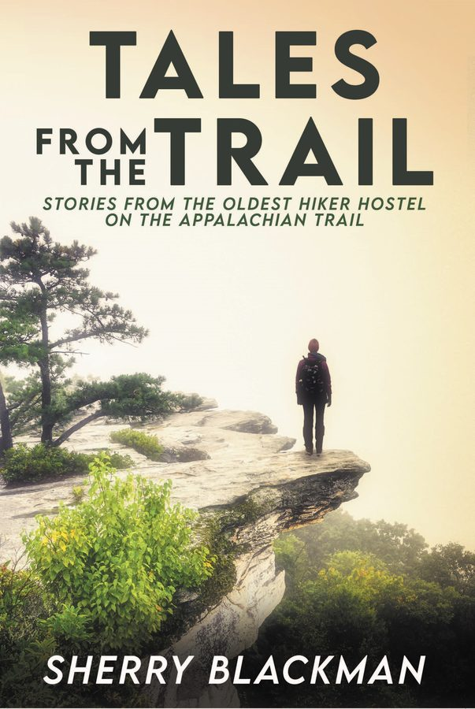

Tales from the Trail
Stories from the Oldest Hiker Hostel on the Appalachian Trail
Tales from the Trail explores the longing within us to lose our life, only to find it.
During the 2020 pandemic, one thing held true: scores of people headed out for a day hike on the Appalachian Trail (AT) as if being in the woods, immersed in beauty and mystery, immunized them against an unseen enemy. The Appalachian Trail became a hospital for souls locked up in quarantine, needing to breathe, stretch, and be nourished by the earth beneath their feet.
For decades, the Appalachian Trail has been a sanctuary for seekers, the tired and the lost; those hungry for renewal, the broken and the grieving; and those who want to face and answer questions they have lugged around with them in invisible backpacks. Questions like, what is next for me? Is there a God? Should I live or end it all? How can I liberate my life from what weighs it down? How can I forgive God?
This book pays tribute to those who dare such a grueling and soul-satisfying adventure. It tells the tales of those on a pilgrimage through insightful conversations and encounters, exploring and revealing what angels the hikers wrestle with in the wilderness who call out to name them again. This collection unveils the spirituality of any such journey in sometimes humorous, sometimes heart-wrenching portraits.
Tales from the Trail explores what it means to be human.
With 3,000 to 4,000 people attempting to thru-hike the Appalachian Trail a year, only about one in four succeed. About 3 million people visit part of the trail every year. On average, most thru-hikers start in the spring and finish in the fall, taking about six months to complete. Yet millions dream of making the trek and spend years preparing to do so.